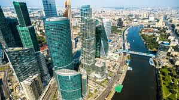

Which City
Moscow

- Moscow was Russia's capital before Peter the Great moved the capital to his new city, St. Petersburg, in 1712, and then again as the capital of the Soviet Union after the Russian Revolution -- the government was moved back to Moscow in 1918.
Moscow never lost its intensity or spirit -- one that has inspired writers and poets, ensnared the nobility with its charms, and proved to be the center of Soviet mystique during the Cold War. Moscow represents both the Russia of yesterday and the Russia of today.
n Moscow you can travel through ages just walking through the streets. Diversified architectural styles wait for you at every turn.
To see the beauty of ancient Russian architecture, visit the Kremlin or Kolomenskoe Museum. These places keep the unique Russian style, original and exceptional.
The Moscow estates are good examples of the romantic flavor of the XVIII-XIX century’s architecture.
The Home-museum of M. Gorky is situated in in a luxurious house built by F. Shechtel, well-known Russian architecture at beginning of the XX century. It is a fantastic example of Art-Nouveau style, one of the few saved places from that epoque, open to visitors.